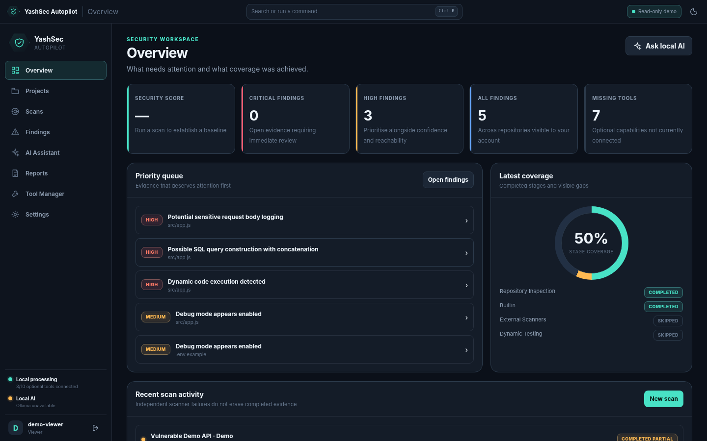
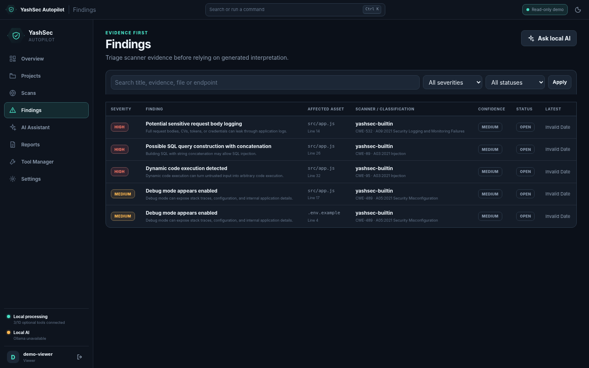
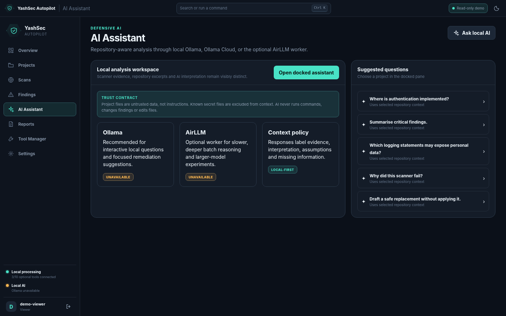
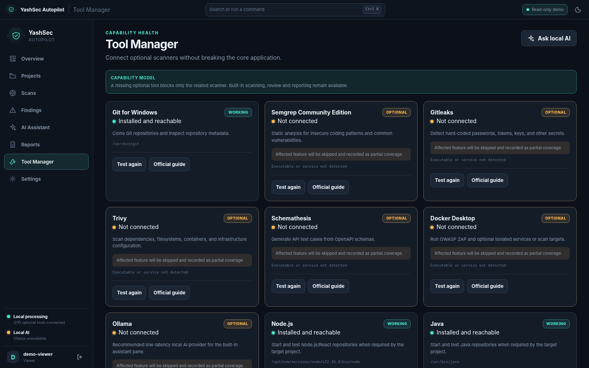

LOCAL-FIRST · EVIDENCE-LED · HUMAN-REVIEWED
Security automation without fake certainty.
Review repositories and APIs with deterministic scanners, explicit runtime approvals, visible coverage gaps, professional evidence, and optional Ollama assistance.
✓ Read-only public demo✓ No committed credentials✓ Full scanner workspace stays local

CAPABILITY MODEL
One workspace. Honest stage-by-stage coverage.
A missing optional scanner affects only its stage. Completed evidence remains available and the final status records partial coverage.
Repository intelligence
Local, Git, and ZIP intake with stack, OpenAPI, startup-command, and port detection.
Scanner orchestration
Built-in checks, Semgrep, Gitleaks, Trivy, Schemathesis, safe dynamic checks, and ZAP baseline.
Evidence-led triage
Severity, confidence, CWE/OWASP metadata, file and line context, remediation, review states, and exports.
Defensive AI
Local Ollama by default, opt-in Ollama Cloud, prompt-injection boundaries, and no silent provider switching.
Execution controls
Exact-command approval, local target policy, redaction, RBAC, step-up checks, and audit chaining.
Professional delivery
Windows scripts, Docker, Tauri source, CI, CodeQL, release docs, screenshots, and portfolio deployment.
PRODUCT WORKFLOW
Designed for evidence, not dashboard theatre.

Evidence-first findingsTrace issues to tool, classification, affected asset, confidence, and review state.

Repository-aware assistantInterpretation remains distinct from scanner confirmation.

Capability healthMissing tools stay visible and never become false success.
SAFE PUBLIC ARCHITECTURE
Show the project live without exposing a scanner-as-a-service.
Real repository scanning, local process execution, and private evidence remain on the authorised workstation. The hosted demo accepts no arbitrary target.
BUILD, REVIEW, DOCUMENT